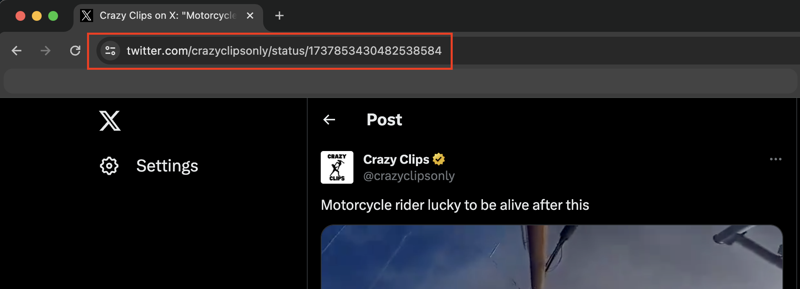
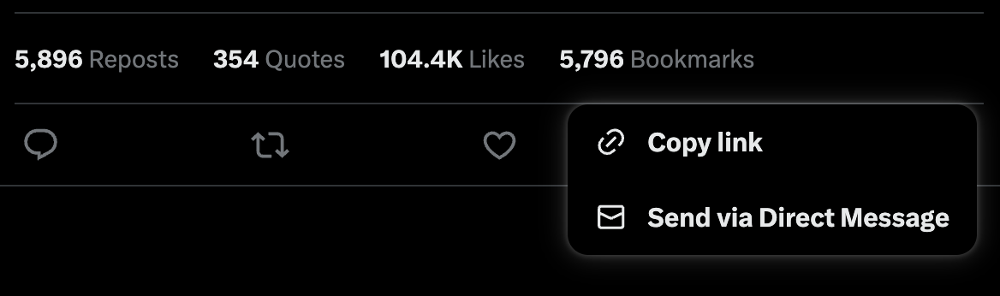

How to Download X (Twitter) and Reddit videos online?
Using Video Hunter, it is now easier for you to download X (Twitter) and Reddit videos. Also, you do not have to worry about 'How to save videos from X (Twitter) and Reddit' because you can also save the video promptly after the video is downloaded.
Below we have come up with a few simple steps. Follow these simple steps to download X (Twitter) and Reddit videos online.
How to download videos from X (Twitter) and Reddit:
- Open Twitter, and go to the tweet which contains twitter video.
- Get the link/url of the tweet which have video.
- Method 1: Click on the tweet, and copy the url from address bar of the browser.

- Method 2: Copy click on the three dots(...), and click on "Copy link".

Now paste de twitter link in the input field and hit "Download".

- Method 1: Click on the tweet, and copy the url from address bar of the browser.
- Now your link will be precessed and you will be redirected to the download page